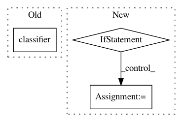

67f153345af2423690753c09f3bd9537d1a5738b,src/models.py,MultiTaskModel,_seq_gen_forward,#MultiTaskModel#Any#Any#,307
Before Change
s1, s1_mask = self.sent_encoder(batch["input1"])
classifier = getattr(self, "%s_mdl" % task.name)
logits = classifier(s1)
out["logits"] = logits
if "labels" in batch:
labels = batch["labels"]
After Change
b_size, seq_len = batch["inputs"]["words"].size()
sent, sent_mask = self.sent_encoder(batch["inputs"])
if isinstance(task, LanguageModelingTask):
hid2voc = getattr(self, "%s_hid2voc" % task.name)
logits = hid2voc(sent)
logits = logits.view(b_size * seq_len, -1)
else:
pass
out["logits"] = logits
if "targs" in batch:
targs = batch["targs"]["words"].view(-1)
In pattern: SUPERPATTERN
Frequency: 3
Non-data size: 3
Instances
Project Name: jsalt18-sentence-repl/jiant
Commit Name: 67f153345af2423690753c09f3bd9537d1a5738b
Time: 2018-06-18
Author: wang.alex.c@gmail.com
File Name: src/models.py
Class Name: MultiTaskModel
Method Name: _seq_gen_forward
Project Name: NVIDIA/sentiment-discovery
Commit Name: 8030eeca74b6634f2a60168516573912aaa9cd65
Time: 2018-11-20
Author: raulp@nvidia.com
File Name: model/modeling.py
Class Name: BertForSequenceClassification
Method Name: forward
Project Name: NVIDIA/sentiment-discovery
Commit Name: ef87f1a071c6b8ca5607874a1a7d77d8a1ab2821
Time: 2018-11-19
Author: raulp@nvidia.com
File Name: model/sentiment_classifier.py
Class Name: SentimentClassifier
Method Name: forward